HTML & CSS Review
BRIEF HISTORY OF THE INTERNET
50s/60s - ARPANET created in America to enable communication between two computers across a network.
70s - Transmission Control Protocol and Internet Protocol (referred) to as TCP/IP created to allow the separate mini-networks to communicate with each other.
90s - Tim Berners-Lee introduces the World Wide Web, which allows information to be freely accessible by anyone with a network connection
HOW IT ALL WORKS
Request is made from the client (laptop/computer) to view a page.
Routers direct the request to the necessary server.
The server deals with the request and sends back a response in a series of 'packets'. Each packet is sent on the quickest route possible (not always the same) to reach the computer.
As these packets can arrive at different times, each one contains instructions for the computer in order to put them back together to create the web page.
The browser then renders the web page.
LANGUAGES
We need languages that to enable us to view these pages and the different media types on them.
INTRO
ENTER THE BIG 3 (*FOR FRONTEND)
HTML
CSS
Javascript
WHAT IS HTML
HTML is a markup language, which means that it is designed for the definition, presentation and formatting of content on a web page.
WHAT IS HTML
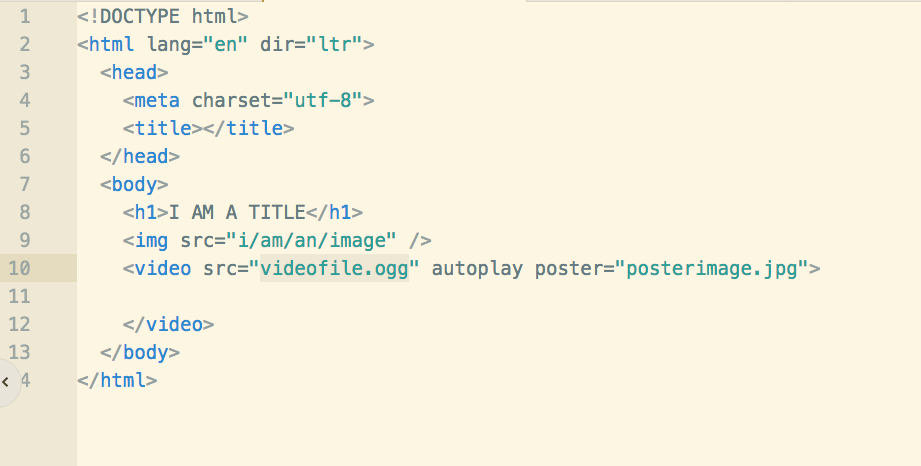HTML Syntax

Self Closing tags
The exception to the previous HTML syntax example are elements that do not require inner content.
These are known as self-closing tags.
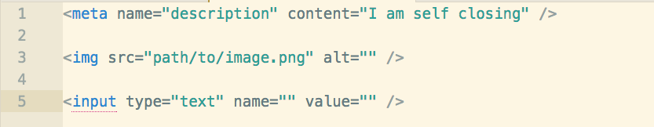HTML Attributes
Used to target HTML elements (IDs, classes) for styling or JavaScript interaction.
They can also be used to add data to elements, set values for input elements and provide paths to files, among many other uses.

HTML TAGS
Each tag has a specific use, and will be used to represent different data
Some quick Notes
Some quick Notes
Code Indentation
It is essential to keep your code correctly indented, as long as it will work even wihtout being properly indented, it will become unreadable
Some quick Notes
File naming
when creating files, ALWAYS avoid using blank spaces, and for this course, avoid using capital letters
this-is-a-good-file-name.htmlSome quick Notes
Commenting code
Every language use comments, which can either be used to add details about the code, or to make sure code won't be 'interpreted' 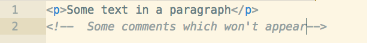TIME FOR A LAB!
Task: complete the full HTML markup for our delicious cookie recipe.
We'll run through how to set up the HTML document together first.
Download Starter codeWHAT IS CSS
CSS stands for Cascading Style Sheets. This means that styles are applied in a cascade, with styles declared lower down in the file taking precedence over earlier styles (all else being equal).
WAYS OF WRITING CSS
There are four ways to style content on your website. These are:
- Using a style tag
- Using the style attribute
- Using JavaScript to style content
- Linking to an external stylesheet
Using a style tag

Using an inline tag
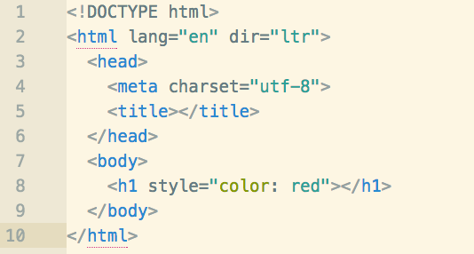Using Javascript
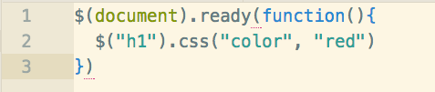Using an inline tag
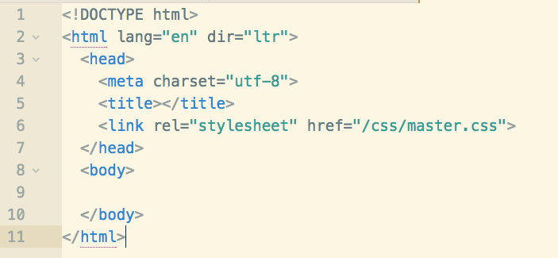Where to link?
It is always best to link to your stylesheet(s) in the <head> tag.
This is so that the styles are loaded before the content is rendered.
File paths
There are two ways to link to a file. One is by using a 'relative' path and the other is using an 'absolute' path.
Anybody know the difference?
Relative path
Relative paths take into account the location of the file the code is written in. It then allows for a path to be outlined from the file where the declaration is made, to the file where the link is being made.
There is a specific syntax to use when writing relative paths:
- '.' denotes the current working directory
- '..' means to jump back one level to the parent directory
- '/' is used to show where a file/directory name begins and ends
Same directory level
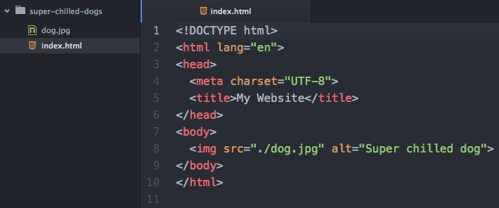Inside directory at same level
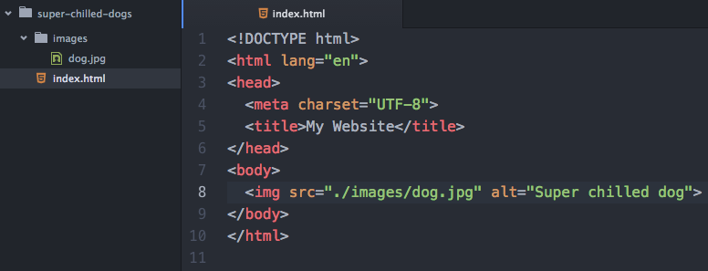Inside directory at parent level
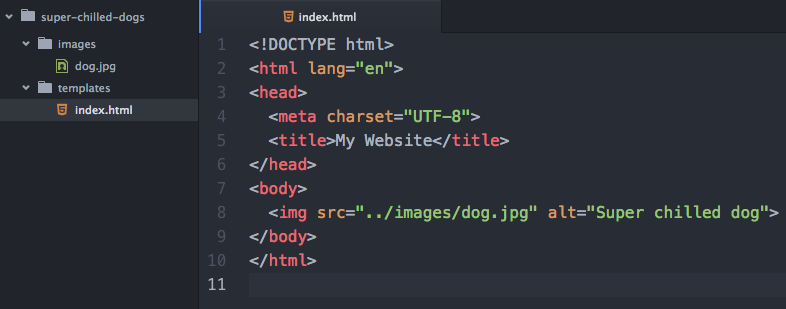Absolute path
An absolute path can either be a path that is absolute on the current drive/server or a full URL. Below is an example of an absolute path using the full URL to point to the image at a 3rd party site (not recommended).
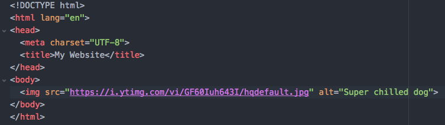Absolute path (cont.)
As mentioned before, the other type of absolute path is absolute according to the file structure on your current drive/server.
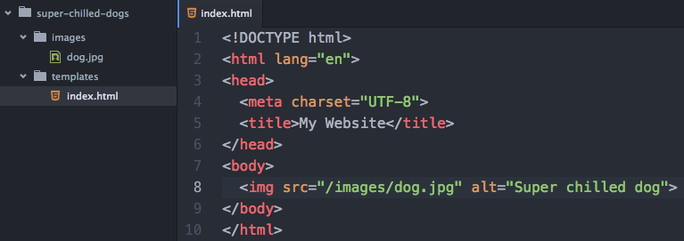Image asset file formats
Different file formats have different properties:
-
.pngSupports transparency and semi-transparency, great for logos, icons, and repeating background tiles. -
.jpegNo transparency, can be stored at different compression levels with varying amounts of "lossy-ness", typically the best format for photos. (Try to balance between photo quality and file size.) -
.gifCan have basic transparency and can cycle through a number of images, providing an animated asset. -
.svgVectorial file, more details about that soon.
File naming
It is useful to develop a consistent strategy for naming files. Here are some good guidelines to start implementing:
-
Never use spaces when naming a file.
-
Use either '-' or '_' to separate words. It doesn't matter which, but be consistent.
-
Use only lowercased letters.
CSS Syntax

Selectors
-
The element 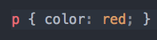
-
An ID 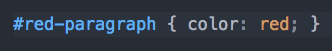
-
A class 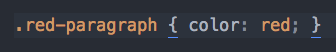
-
An attribute 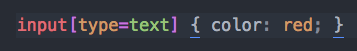
Selectors (Cont)
-
A stateful pseudo-class 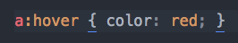
-
A positional/number based pseudo-class 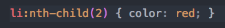
The DOM
The Document Object Model (DOM) provides a virtual representation of your markup. Once the document (your page) is parsed by the browser, the DOM renders your code as a group of 'nodes'.
The DOM (cont.)

Credit: Web Step Book
Chrome Dev Tools
These will become your go-to tool box as a frontend developer. Simply right-click on any element on a webpage and select 'Inspect'.
Let's have a look online!
Specificity
Determines how specific your selectors are.
As a rule of thumb, CSS code is easiest to manage when your selectors are specific enough to target the required element, but not so specific that there may be knock-on consequences for other, similar elements.
This is because more specific selector chains will override less specific ones.
Calculating specificity
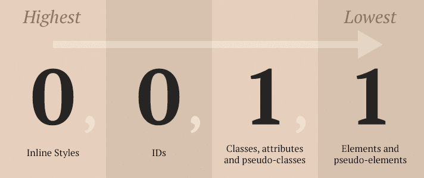Credit: Web Dev Studios
Codepen Example
Click here
What to use for styling
It's advisable to avoid putting these 3 things in your selector chains:
-
IDs: should only be used for JavaScript interation
-
Inline styles: just don't
-
!important flag: things are going seriously wrong if you find a lot of these dotted around your code!
Inheritance
Some CSS styles can be handed down from the parent element to all of its children. This is known as inheritance.
You can find out which CSS properties are inherited by checking the 'inherited' column in this W3C table.
Codepen Example
Click here
CSS lengths
There are many different units that can be used to declare CSS
properties such as height, width,
margin, padding, plus many more.
CSS lengths (cont.)
The different types of CSS length units include:
- Absolute units
- Relative units
- Viewport percentage lengths
- Percentage
I will only be touching on the main units. If you would like to read up on them all, then here is a great article written by Chris Coyier.
Absolute units
By far the most commonly used absolute unit is the pixel (px).
Once an element has an explicit pixel width or
height assigned to it, it will never change size
based on unit changes elsewhere in the code or based on screen
size.
Relative units
The two most common relative units are em and
rem units.
em units are calculated as a multiple of the closest
ancestor with an explicit font-size declaration.
rem units are expressed as a multiple of the root
element (the <html> element).
Let's go back to our inheritance Codepen to work through it.
Viewport percentage lengths
vh and vw can be used to set an element's
size relative to a percentage of the viewport. Both are used
by writing a value of between 0-100 before expressing the unit
e.g. 70vh.
vh is a percentage value of the height of the viewport.
vw is a percentage value of the width of the viewport.
Percentage
Element dimensions can also be declared as a %.
An element's percentage will define its dimensions in relation to its parent element.
For example, if the parent container has a width of 500px and the child's width is set to 50%, the width of the child will be 250px.
CSS colors (yep that's how to spell it in CSS!)
When declaring colours in CSS, there are 6 different options available to you:
- Keyword
- Hex code
- RGB
- RGBa
- HSL
- HSLa
Keyword
As you have already seen, there are some keywords for CSS colours,
such as black, white, red.
Or if you want to go very random: blanchedalmond,
palegoldenrod, peachpuff, whitesmoke,
or my personal favourite papayawhip.
Hex
Hex code values range from 0 (lowest) to F (highest) with the first two numbers representing red, the second two green and the final two blue.

This is the only colour unit where you can be really sad (like me)
and create words out of colour codes...#BADA55!
RGB and RGBa
RGB is written as 3 values ranging from 0-255. The first unit is
for red, second for green and third for blue e.g. rgb(0,100,0) would
be a dark-ish green.
RGBa is the same as RGB, only a fourth value is added ranging from 0-1.
This unit represents transparency with 0 being fully transparent and
1 being solid e.g. rgba(0,100,0, 0.5) would be the same colour as before,
but slightly transparent.
HSL and HSLa
HSL is typically the least used colour unit in CSS.
The numbers correspond to the hue, saturation and lightness of the colour. Hue is expressed as a degree angle measure. Saturation is expressed as a percentage, with 100% being a fully saturated color, and 0% being a shade of gray (no hue). Lightness is also expressed as a percentage, 0% being black, and 100% being white.
HSL and HSLa (continued)

Credit: Codrops
Key Takeaways (HTML)
-
Always link to an external stylesheet
-
CSS stands for Cascading Stylesheets, meaning styles are applied in a cascade. Therefore (all else being equal) the final declaration on an element will be applied.
-
The DOM is a tree-like representation of your HTML structure
Key Takeaways
-
Always indent your HTML
-
Always put the content in the body and the meta data in the head.
-
Always use dashes in files name